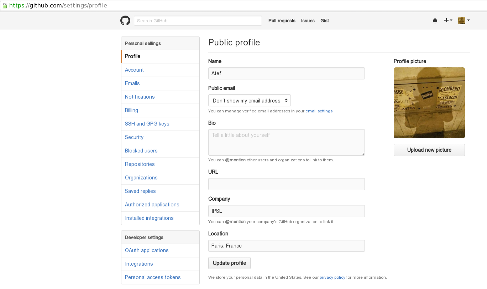
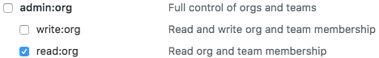

Authentication¶
The most important step towards properly configuring and the good use of the ESGF errata cliant is the authentication part.
GitHub setup¶
The most important step towards properly configuring and the good use of the esdoc-errata issue client is the authentication part. A verified github account is required, along with a generated personal access token.
The personal access token can only be generated on github, if the user’s account email has been verified. It can be found under your profile settings page: https://github.com/settings/profile
{kind=link}
When generating the new token make sure you specify a description that you feel appropriate to the Errata client and to select proper scopes. Selecting scopes is a crucial part of the token generation, the errata client doesn’t require anything beside the read org and team membership scope. This enables us to reduce to a minimum the potential threats, which is the whole point of delegating authentication to a third party.
{kind=link}
Once the access token has been configured, the authentication part of the errata client is ready. A user needs, however, proper writing rights to be authorized to create, update and close issues.
Authorization is controlled using github’s organizations invitational based structure. In order to publish issues related to a specific institute, you have to be part of the issue publishing team organisation respective to that institute. After contacting the admins about this matter, the github profile should be invited to the appropriate organization and team.
Credentials management¶
After successfully creating the personal access token on github, what remains to be done is simply for the convenience of the user. Saving credentials makes the use of the errata client much easier. After the first usage of the client to create, update or close an issue, the user has a choice to save the credentials locally. Of course, this step can be ignored but users will be asked to provide the credentials at each and every use of the client (except for retrieving actions). Credentials are safely saved at a local file in a git fashion, encrypted using salt and pepper and sha512 encryption with a pass-phrase that the user should provide.
$>python esgissue.py create --issue samples/issue1.json --dsets samples/dsets1.txt
$>Username: AtefBN
$>Token: 44axxxxxxxxxxxxxxxxxxxxxxxxxxxxxxxxxxxxx
$>Would you like to save your credentials for later uses? (y/n): y
$>Select passphrase to encrypt credentials, this will log you in from now on:
$>2017/01/03 11:57:06 AM INFO Credentials were successfully saved.
$>2017/01/03 11:57:06 AM INFO Validating issue...
$>2017/01/03 11:57:07 AM INFO Validation Result: SUCCESSFUL
$>2017/01/03 11:57:07 AM INFO Requesting issue #91ad5eb8-d1d1-44ce-94ec-473473e8654a creation from errata service...
$>2017/01/03 11:57:09 AM INFO Updating fields of payload after remote issue creation...
$>2017/01/03 11:57:09 AM INFO Issue json schema has been updated, persisting in file...
$>2017/01/03 11:57:09 AM INFO Issue file has been created successfully!
After declaring these credentials, the client will only ask user to provide the pass-phrase from now on. In case the user forgets the pass-phrase, the saved credentials can be reset using the command:
$>esgissue credreset
$>2017/01/03 11:54:35 AM INFO Credentials have been successfully reset.
This will obviously result in the reset of the saved credentials, and the client will now ask for that information in the next usages.
In the case that the user does recall the pass-phrase and just wishes to modify it, this is possible using the following command:
$>esgissue changepass changepass --oldpass AtefBN --newpass ACatchyPassPhrase
$>2017/01/03 12:30:04 PM INFO Passphrase has been successfully updated.
or
$>esgissue changepass
$>2017/01/03 04:45:59 PM INFO Old and new pass-phrases are required, if you forgot yours, use: esgissue credreset
$>Old Passphrase: AtefBN
$>New Passphrase: YoloSwag
$>2017/01/03 04:46:10 PM INFO Passphrase has been successfully updated.
This will prompt user to type in old and new passphrase.